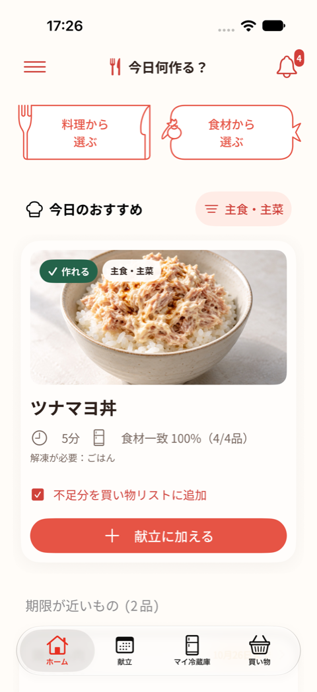
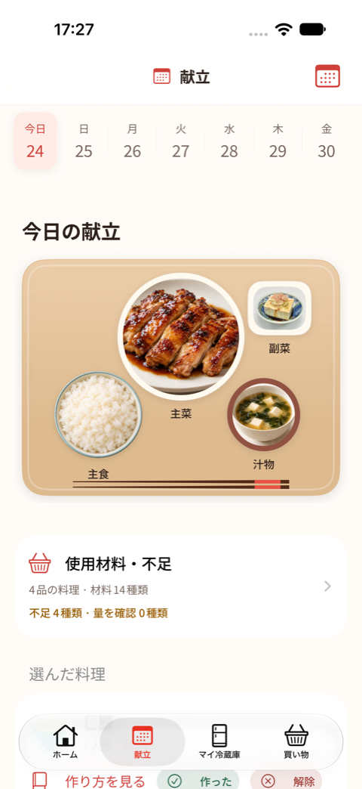
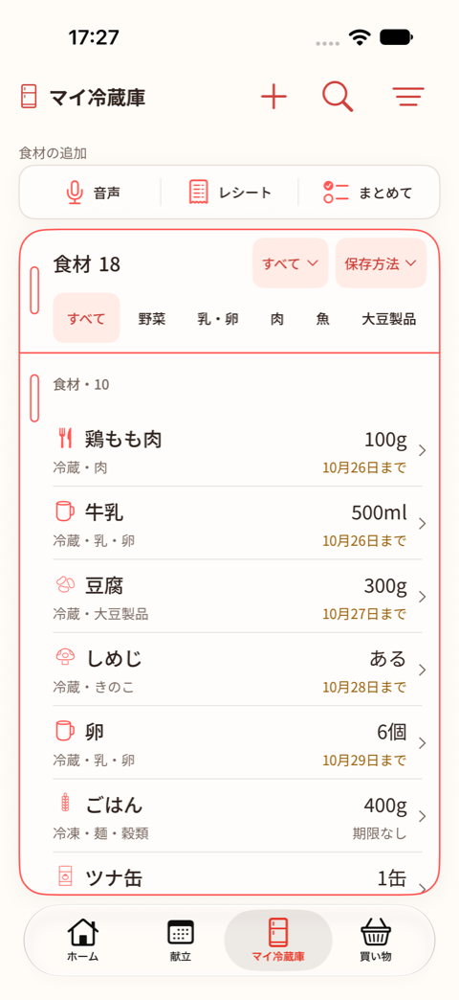

冷蔵庫から、今日のごはん。
今日、何を作ろう。
ある食材から献立を選んで、
足りないものだけ買い物へ。
「今日何食べる？」は、食材の登録から調理後の在庫更新までつながる、iOSアプリです。
使い方とサポートiPhone・iPad ／ iOS 17以降 ／ アカウント登録不要

あるものから選ぶ
冷蔵庫に合う料理を画像で確認。使いたい食材からも探せます。
お盆に献立を並べる
主食・主菜・副菜・汁物。使う材料と不足分をまとめて確認できます。
買ったら冷蔵庫へ
買い物リストで購入チェック。確認した量を冷蔵庫へ登録できます。

今日の献立
食卓を思い浮かべて、
料理を組み合わせる。
192品のレシピから、主食・主菜・副菜・汁物を選べます。使う材料をまとめて、買い足すものを確認。料理ごとの手順や工程の時間も見られます。

マイ冷蔵庫
登録は、
気軽な方法で。
食材検索、音声入力、レシートの読み取り。「あり・少なめ・なし」でも、個数やグラムでも管理できます。
同じ条件の在庫には追加した量を自動で合算。期限や保存方法が違う分は分けて残します。
毎日の記録は、端末の中に。
アカウント登録なし。広告・外部解析サービスなし。在庫管理と手入力はオフラインでも使えます。
音声入力は日本語の端末内認識に対応した環境で利用できます。レシートの認識結果は、内容を確認してから登録します。料理画像には生成画像を含み、仕上がりはレシピと異なる場合があります。
情報の取り扱いを見る